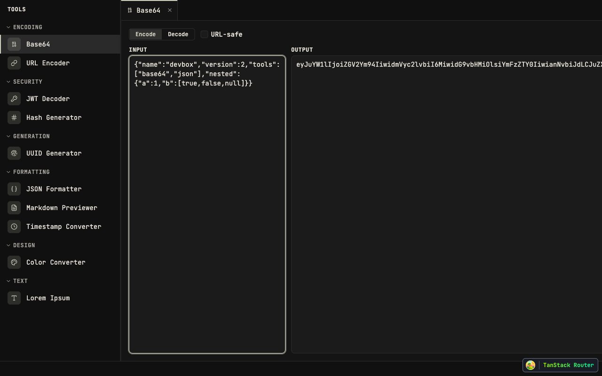

Summary. Swap the two plain text boxes in the Base64 tool for a real code editor (CodeMirror 6). You get syntax highlighting, line numbers, and proper multi-line editing — so pasting a chunk of JSON, XML, or a config file to encode/decode is readable instead of a flat grey wall of text. The editor follows the app's existing theme and the font / font-size / tab-size you already set in Settings. No change to how encoding works — only how you read and edit the text.
Today both the input and output are basic <textarea> boxes. For a
single short string that's fine, but the issue calls out the real workflows that hurt:
multi-line JSON / XML / config files, and code blocks. There's no highlighting, no line
numbers, and no indent handling — so anything bigger than a line or two is hard to scan
and easy to mis-edit. Other "code-focused" tools in devbox should feel consistent, and a
flat textarea breaks that.

Plain textareas. JSON pasted into Input has no colours, no line numbers, wraps as one block.
Same data with CodeMirror: line numbers, JSON syntax colours, indent-aware editing. Output box gets the same treatment.
Better: readable JSON/XML/config when encoding or decoding; line numbers; Tab indents instead of leaving the field; respects your Settings (theme, font, font-size, tab-size) automatically. Unchanged: encode/decode logic, URL-safe toggle, Encode/Decode modes, and persistence of your input across reloads. Cost: first open of the Base64 tab downloads a bit more JS (editor is lazy-loaded, so the rest of the app is unaffected).
CLAUDE.md lists
CodeMirror 6 as part of the stack, but there are no @codemirror/* deps in
package.json and zero usage in src/. This is a fresh dependency
add, not wiring up something that exists.@uiw/react-codemirror
installs cleanly against React 19.2 (use a version ≥ 4.23).--* tokens for free.detectLanguage() util, not the editor widget itself.Architecture rule (verified in repo): a tool's
domain/ is pure and must not change; UI is presentational + a view-model hook.
The editor is a generic widget → lives in src/shared/ui/; the language heuristic
is pure → lives in src/shared/lib/editor/. Module-internal imports stay relative.
No @codemirror/* packages exist yet. Add the React wrapper, two language
packages (JSON, XML), and the commands package (for indentWithTab).
vp add @uiw/react-codemirror @codemirror/lang-json @codemirror/lang-xml @codemirror/commands @codemirror/state @codemirror/viewvp install resolves with no React 19 peer-dependency errors.@uiw/react-codemirror version is ≥ 4.23 (React 19 support).New file src/shared/lib/editor/detect-language.ts. No DOM, no CM imports —
just a string heuristic so it's trivially testable.
export type EditorLanguage = "json" | "xml" | "text";
export function detectLanguage(text: string): EditorLanguage {
const t = text.trim();
if (t === "") return "text";
if ((t.startsWith("{") || t.startsWith("[")) ) {
try { JSON.parse(t); return "json"; } catch { /* fall through */ }
}
if (t.startsWith("<")) return "xml";
return "text";
}detectLanguage('{"a":1}') → "json"; malformed JSON → "text".detectLanguage('<root/>') → "xml"; "" → "text".CodeEditor componentNew file src/shared/ui/code-editor.tsx. Controlled wrapper around
@uiw/react-codemirror. Reads fontSize + tabSize from
the settings store (src/app/stores/use-settings-store.ts). Theme chrome follows
the app via CSS vars on a CM theme; map the language prop to the right extension.
export * from "./code-editor";import { useMemo } from "react";
import CodeMirror, { EditorView, type Extension } from "@uiw/react-codemirror";
import { indentWithTab } from "@codemirror/commands";
import { keymap } from "@codemirror/view";
import { indentUnit } from "@codemirror/language";
import { json } from "@codemirror/lang-json";
import { xml } from "@codemirror/lang-xml";
import { useSettingsStore } from "@/app/stores/use-settings-store";
import type { EditorLanguage } from "@/shared/lib/editor/detect-language";
import { cn } from "@/shared/utils";
const LANG_EXT: Record = {
json: [json()], xml: [xml()], text: [],
};
// Chrome follows app theme via CSS custom properties already on :root[data-theme].
const appTheme = EditorView.theme({
"&": { backgroundColor: "var(--color-background)", color: "var(--color-foreground)" },
".cm-gutters": { backgroundColor: "var(--color-background)", color: "var(--color-muted-foreground)", border: "none" },
".cm-activeLine, .cm-activeLineGutter": { backgroundColor: "color-mix(in oklch, var(--color-foreground) 6%, transparent)" },
"&.cm-focused": { outline: "none" },
});
interface CodeEditorProps {
value: string;
onChange?: (value: string) => void;
readOnly?: boolean;
language?: EditorLanguage;
placeholder?: string;
className?: string;
}
export function CodeEditor({ value, onChange, readOnly, language = "text", placeholder, className }: CodeEditorProps) {
const fontSize = useSettingsStore((s) => s.fontSize);
const tabSize = useSettingsStore((s) => s.tabSize);
const extensions = useMemo<Extension[]>(() => [
appTheme,
EditorView.lineWrapping,
indentUnit.of(" ".repeat(tabSize)),
keymap.of([indentWithTab]),
...LANG_EXT[language],
], [language, tabSize]);
return (
<CodeMirror
className={cn("h-full overflow-auto rounded-lg border border-border text-[--cm-fs]", className)}
style={{ ["--cm-fs" as string]: `${fontSize}px`, height: "100%" }}
value={value}
onChange={onChange}
readOnly={readOnly}
placeholder={placeholder}
basicSetup={{ lineNumbers: true, foldGutter: false, highlightActiveLine: !readOnly }}
extensions={extensions}
theme="none"
/>
);
} theme="none" and supply our own appTheme so it tracks
data-theme via CSS vars — no manual reconfigure on theme switch.HighlightStyle per theme (see Risks). Verify visually in Task 6.onChange fires controlled updates; readOnly blocks edits.CodeEditor in the Base64 toolReplace both <Textarea> in src/modules/base64/ui/base64-tool.tsx.
Input is editable with detected language; output is read-only (detect only in Decode mode —
encode output is base64, i.e. text). Do not touch
domain/base64.ts or the store shape.
import { CodeEditor } from "@/shared/ui";
import { detectLanguage } from "@/shared/lib/editor/detect-language";
// ...
const inputLang = detectLanguage(input);
const outputLang = mode === "decode" ? detectLanguage(output) : "text";
// Input
<CodeEditor
value={input}
onChange={setInput}
language={inputLang}
placeholder={mode === "encode" ? "Text to encode…" : "Base64 to decode…"}
className="flex-1"
/>
// Output
<CodeEditor value={output} readOnly language={outputLang} placeholder="Result…" className="flex-1" />error.message) still work.base64).flex-1, side-by-side on md:).No new settings needed — fontSize and tabSize already exist in
use-settings-store.ts (defaults 14 / 2) and the settings dialog. Confirm the editor
consumes them and that theme switching (data-theme set by
settings-effects.ts) recolours the editor.
Unit: detect-language.test.ts covers json / xml / text / empty / malformed.
Manual: run the app, open /tool/base64, paste JSON and XML in both modes, toggle
URL-safe, change theme + font-size + tab-size in Settings, reload to confirm persistence.
vp check
vp testvp add omits @codemirror/language, but Task 3 imports indentUnit from it. Strict pnpm won't expose an undeclared dep → add it to the install list.code-editor.tsx (in shared/ui) imports useSettingsStore from @/app/... — inverts layering (shared → app). Pass fontSize/tabSize as props from the base64 module instead.defaultHighlightStyle token colours are baked-in JS and won't follow data-theme. A per-theme HighlightStyle is core scope (issue is about highlighting), not the deferred note the plan made it.detect-language.test.ts. Add at least a smoke test (onChange / readOnly).detectLanguage() runs JSON.parse on the full input every render with no memo/debounce — bad for the large-file workflow the issue targets.spellCheck=false equivalent (CM defaults off, OK).vp check (oxlint typeAware) accepts the ["--cm-fs" as string] cast and generic.--color-background/-foreground/-muted-foreground exist via @theme inline (index.css). @uiw/react-codemirror re-exports EditorView; theme="none", placeholder, readOnly props valid.